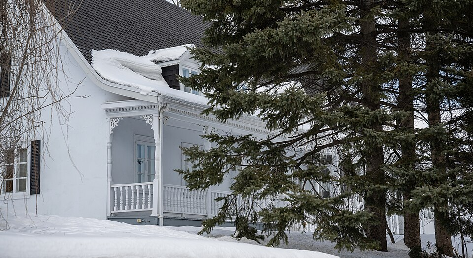

Québec house of neoclassical inspiration La maison québécoise d'inspiration néoclassique

"Old house in Charlesbourg" by Wilfredor, 10 February 2021, Wikimedia Commons, released CC0 (Creative Commons Zero, Public Domain Dedication) — licence read on the Commons API before download. File: https://commons.wikimedia.org/wiki/File:Old_house_in_Charlesbourg.jpg

"Old house in Charlesbourg 005" by Wilfredor, 10 February 2021, Wikimedia Commons, released CC0 (Creative Commons Zero, Public Domain Dedication) — licence read on the Commons API before download. File: https://commons.wikimedia.org/wiki/File:Old_house_in_Charlesbourg_005.jpg
The 19th-century village house, and the one the Trait-Carré is mostly made of: a rectangular white box raised just enough for a rough cellar, with the roof's larmiers reaching out past the wall — often curving up as they go — to shelter a gallery running the whole width of the façade. Large-paned casements sit symmetrically either side of a central door in moulded frames, and a summer kitchen often repeats the house in miniature at the back.
The plan makes it an explicitly post-Conquest form: British know-how, changing construction technique and changing ways of living produce a new type that "marque tout le XIXe siècle", while keeping the rectangular plan and the sloped roof of the French model. It is the same house Saint-Lambert, Terrebonne, Lévis, Québec City and Île d'Orléans each catalogue under their own names, and the Charlesbourg description is the one that insists on the colour.
| Tenure / plan | single-family |
|---|---|
| Storeys | – |
| Roof form | gabled |
| Roof pitch | – |
| Window proportion | vertical |
| Principal cladding | wood-board-vertical, wood-clapboard, fieldstone-rendered |
| Roofing | bardeaux de cèdre ou tôle traditionnelle à la canadienne ou à baguettes |
| Garage | – |
| Lot width | – |
| Front setback | – |
| Side setback | – |
| Front yard green | – |
What MCC says about this type
- Après la Conquête, les Britanniques introduisent de nouveaux savoir-faire qui, couplés à l'évolution des techniques de construction et des manières d'habiter, favorisent l'émergence d'un nouveau type architectural qui marque tout le XIXe siècle : la maison québécoise d'inspiration néoclassique. Ce type reprend certaines caractéristiques du modèle français, dont le plan rectangulaire et le toit à versants.
- The type that marks the whole 19th century in the site, and the one that fills the Trait-Carré on both sides.
- Rectangular plan, raised off the ground to give a rudimentary cellar.
- Two-slope roof with overhanging larmiers, sometimes upturned.
- A summer kitchen sometimes repeats the volume of the house at reduced scale, set back against the north-east wall or perpendicular at the rear.
- un plan rectangulaire surélevé du sol afin d'aménager une cave rudimentaire
- une galerie longeant la façade, protégée par le larmier débordant du toit, espace de transition entre l'intérieur et l'extérieur, souvent décorée de boiseries ornementales
- une cuisine d'été reprenant parfois le volume de la maison à une échelle réduite, généralement implantée en recul contre le mur nord-est ou perpendiculairement à l'arrière
- un toit à deux versants à larmiers débordants, parfois recourbés, couvert de bardeaux de cèdre ou de tôle traditionnelle à la canadienne ou à baguettes
- A gallery running along the façade, sheltered by the overhanging larmier — a transitional space between inside and out, often decorated with ornamental woodwork.
- Openings framed by moulded wood chambranles.
- Many wood casement windows with large panes, rectangular and vertically proportioned, usually set symmetrically about the door at the centre of the façade.
- de nombreuses fenêtres en bois à battants à grands carreaux, de forme rectangulaire aux proportions verticales. Ces fenêtres sont souvent disposées symétriquement autour de la porte occupant le centre de la façade. Les ouvertures sont encadrées de chambranles moulurés en bois
- Pièce-sur-pièce or madrier-sur-madrier structure.
- Vertical or horizontal plank cladding, or fieldstone rendered and whitewashed. In wood or in masonry alike, these houses are white.
- une structure construite en pièce sur pièce ou en madrier sur madrier
- un parement de planches verticales ou horizontales, ou en maçonnerie de pierres des champs recouverte d'un crépi et chaulée. En bois ou en maçonnerie, ces maisons sont de couleur blanche
Transcribed from the plan de conservation's printed p. 49. The seven bullets of « Voici les principales caractéristiques de ce type » are split across the columns: plan and roof make up massing, the gallery and the summer kitchen sit under saillies, structure and cladding are materials, and the ornamental woodwork of the gallery and the moulded chambranles are the only ornament the plan names, so they carry articulation. The plan gives no storey count and no roof pitch for this type. The colour statement is unusual and worth keeping verbatim: the plan does not say these houses are often white, it says they are white.
Same word elsewhere
- Rural house of French inspiration (Charlesbourg (Trait-Carré))
- Mansard house (Charlesbourg (Trait-Carré))
- Cubic house (Four Square) (Charlesbourg (Trait-Carré))
- Industrial vernacular house (Charlesbourg (Trait-Carré))
- Central-gable house (maison à pignon central) (Gatineau)
- Complex gabled-roof house (maison à toit complexe à pignon) (Gatineau)
- Mansard-roofed house with gable wall on the façade (maison à toit mansardé avec mur pignon en façade) (Gatineau)
- One-and-a-half-storey wooden matchstick house (maison allumette en bois d'un étage et demi) (Gatineau)
- Wood matchstick house of two to two and a half storeys (maison allumette en bois de deux à deux étages et demi) (Gatineau)
- Brick matchbox house, two to two and a half storeys (maison allumette en brique de deux à deux étages et demi) (Gatineau)
- Cubic house (maison cubique) (Gatineau)
- CIP executive's house (maison de cadre de la CIP) (Gatineau)
- Flat-roofed wood house (maison en bois à toit plat) (Gatineau)
- Flat-roofed brick house (maison en brique à toit plat) (Gatineau)
- L-plan house with a two-slope (gable) roof (maison avec plan en L à toit à deux versants) (Gatineau)
- English-revival stone house (Hampstead)
- Postwar detached house (Hampstead)
- House of French inspiration (Île d'Orléans)
- Traditional Québec house of neoclassical influence (Île d'Orléans)
- Second Empire style and the mansard house (Île d'Orléans)
- Boomtown house (Île d'Orléans)
- Cubic house (Four Square) (Île d'Orléans)
- Franco-Québécois transitional house (Lévis)
- Québécois traditional house (Lévis)
- Neoclassical house (Lévis)
- Second Empire house (Lévis)
- Victorian house (Lévis)
- American vernacular house (Lévis)
- Beaux-Arts house (Lévis)
- Boomtown house (Lévis)
- Flat-roofed house (Lévis)
- Garden City House (Town of Mount Royal)
- Faubourg House (Town of Mount Royal)
- Canadian House (Town of Mount Royal)
- New England House (Town of Mount Royal)
- Georgian House (Town of Mount Royal)
- English Manor House (Town of Mount Royal)
- Bungalow (Town of Mount Royal)
- Cottage (Town of Mount Royal)
- Split-Level (Town of Mount Royal)
- Prairie House (Town of Mount Royal)
- Semi-detached single-family house (Outremont (borough of Montréal))
- Detached single-family house (Outremont (borough of Montréal))
- Modern house on the flank (Outremont (borough of Montréal))
- Faubourg house (Le Plateau-Mont-Royal (borough of Montréal))
- Detached urban house (Le Plateau-Mont-Royal (borough of Montréal))
- Row urban house (Le Plateau-Mont-Royal (borough of Montréal))
- One-storey rural house of French inspiration (Québec City)
- Urban stone house of French inspiration (Québec City)
- Franco-Québécois transition house (Québec City)
- London-type terrace house (Québec City)
- Québécois neoclassical house (Québec City)
- Mansard-roofed house (Québec City)
- Rudimentary faubourg house (Québec City)
- Cubic house (Four Square) (Québec City)
- Flat-roofed faubourg house (Québec City)
- Neo-Queen Anne house (Québec City)
- Neo-Tudor house (Québec City)
- Arts and Crafts house (Québec City)
- Dutch Colonial Revival house (Québec City)
- Neo-Georgian house (Québec City)
- Traditional French and Québécois house (Saint-Lambert)
- Mansard-roofed house of Second Empire influence (Saint-Lambert)
- Queen Anne style house (Saint-Lambert)
- Boomtown house with false mansard (Saint-Lambert)
- Boomtown house with crown (parapet or cornice) (Saint-Lambert)
- Cubic (Four Square) house (Saint-Lambert)
- House of Arts and Crafts influence (Saint-Lambert)
- The modern house (including the bungalow) (Saint-Lambert)
- Lower-town company house (Ross and Macdonald, 1918–1923) (Témiscaming)
- Upper-district company house (Somerville, 1925–1950) (Témiscaming)
- Stone house in the French tradition (Vieux-Terrebonne)
- Maison cossue of rue Saint-Louis (Vieux-Terrebonne)
- Neoclassical Québécois stone house (Vieux-Terrebonne)
- Small-gabarit vernacular village house of the Bas-de-la-Côte (Vieux-Terrebonne)
- French-regime house in stone (colonial français) (Trois-Rivières)
- Well-to-do bourgeois house in stone and brick (maison cossue) (Trois-Rivières)
- Boomtown house (Trois-Rivières)
- Cubic house (Four-square) (Trois-Rivières)
- Arts & Crafts house (Trois-Rivières)
- Picturesque villa and country house (Westmount)
- Greystone row house (Westmount)
- Mansard-roofed house of Second Empire influence (Westmount)
- Queen Anne house (Westmount)
- Richardsonian Romanesque house (Westmount)
- Semi-detached brick house (Westmount)
- Eclectic prestige house of the summit (Westmount)
- Tudor Revival house (Westmount)
- Arts and Crafts semi-detached house (Westmount)
- Interwar apartment house (Westmount)
Same form elsewhere
- Traditional Québec house of neoclassical influence (Île d'Orléans)
- Québécois traditional house (Lévis)
- Québécois neoclassical house (Québec City)
- Traditional French and Québécois house (Saint-Lambert)
- Neoclassical Québécois stone house (Vieux-Terrebonne)
Same period elsewhere
- Central-gable house (maison à pignon central) (Gatineau)
- Mansard-roofed house with gable wall on the façade (maison à toit mansardé avec mur pignon en façade) (Gatineau)
- One-and-a-half-storey wooden matchstick house (maison allumette en bois d'un étage et demi) (Gatineau)
- Wood matchstick house of two to two and a half storeys (maison allumette en bois de deux à deux étages et demi) (Gatineau)
- L-plan house with a two-slope (gable) roof (maison avec plan en L à toit à deux versants) (Gatineau)
- House of French inspiration (Île d'Orléans)
- Traditional Québec house of neoclassical influence (Île d'Orléans)
- Regency cottage (Île d'Orléans)
- Second Empire style and the mansard house (Île d'Orléans)
- Victorian eclecticism (Île d'Orléans)
- French-regime house (Régime français) (Lévis)
- Franco-Québécois transitional house (Lévis)
- Québécois traditional house (Lévis)
- Regency cottage (Lévis)
- Neo-Gothic (Lévis)
- Neoclassical house (Lévis)
- Agricultural vernacular building (Lévis)
- Second Empire house (Lévis)
- Victorian house (Lévis)
- American vernacular house (Lévis)
- Mixed-use or commercial building (Lévis)
- Faubourg house (Le Plateau-Mont-Royal (borough of Montréal))
- Detached urban house (Le Plateau-Mont-Royal (borough of Montréal))
- Duplex without front setback (Le Plateau-Mont-Royal (borough of Montréal))
- Duplex with front setback (Le Plateau-Mont-Royal (borough of Montréal))
- Duplex with exterior stair (Le Plateau-Mont-Royal (borough of Montréal))
- Triplex with interior stair (Le Plateau-Mont-Royal (borough of Montréal))
- Triplex with exterior stair (Le Plateau-Mont-Royal (borough of Montréal))
- Multiplex (Le Plateau-Mont-Royal (borough of Montréal))
- Row urban house (Le Plateau-Mont-Royal (borough of Montréal))
- One-storey rural house of French inspiration (Québec City)
- Urban stone house of French inspiration (Québec City)
- Franco-Québécois transition house (Québec City)
- London-type terrace house (Québec City)
- Palladian house (residential Palladian) (Québec City)
- Neo-Gothic house, villa or cottage (Québec City)
- Québécois neoclassical house (Québec City)
- Regency cottage (Québec City)
- Regency villa (Québec City)
- Mansard-roofed house (Québec City)
- Rudimentary faubourg house (Québec City)
- Boomtown house and shop-house (Québec City)
- Cubic house (Four Square) (Québec City)
- Flat-roofed faubourg house (Québec City)
- Industrial-vernacular cottage (Québec City)
- Neo-Queen Anne house (Québec City)
- Neo-Renaissance house and mixed-use block (Québec City)
- Neo-Tudor house (Québec City)
- Plex — superposed dwellings (Québec City)
- Traditional French and Québécois house (Saint-Lambert)
- Mansard-roofed house of Second Empire influence (Saint-Lambert)
- Queen Anne style house (Saint-Lambert)
- Boomtown house with false mansard (Saint-Lambert)
- Boomtown house with crown (parapet or cornice) (Saint-Lambert)
- Cubic (Four Square) house (Saint-Lambert)
- House of Arts and Crafts influence (Saint-Lambert)
- Multi-dwelling building of plex type (Saint-Lambert)
- Stone house in the French tradition (Vieux-Terrebonne)
- Maison cossue of rue Saint-Louis (Vieux-Terrebonne)
- Neoclassical Québécois stone house (Vieux-Terrebonne)
- Small-gabarit vernacular village house of the Bas-de-la-Côte (Vieux-Terrebonne)
- French-regime house in stone (colonial français) (Trois-Rivières)
- Well-to-do bourgeois house in stone and brick (maison cossue) (Trois-Rivières)
- Picturesque villa and country house (Westmount)
- Greystone row house (Westmount)
- Greystone triplex with exterior stair (Westmount)
- Mansard-roofed house of Second Empire influence (Westmount)
- Queen Anne house (Westmount)
- Richardsonian Romanesque house (Westmount)
Same style elsewhere
- Central-gable house (maison à pignon central) (Gatineau)
- Traditional Québec house of neoclassical influence (Île d'Orléans)
- Franco-Québécois transitional house (Lévis)
- Québécois traditional house (Lévis)
- Neoclassical house (Lévis)
- Franco-Québécois transition house (Québec City)
- London-type terrace house (Québec City)
- Québécois neoclassical house (Québec City)
- Rudimentary faubourg house (Québec City)
- Traditional French and Québécois house (Saint-Lambert)
- Neoclassical Québécois stone house (Vieux-Terrebonne)
- Well-to-do bourgeois house in stone and brick (maison cossue) (Trois-Rivières)